Q.1: Write one example explaining how you can write a callback function.
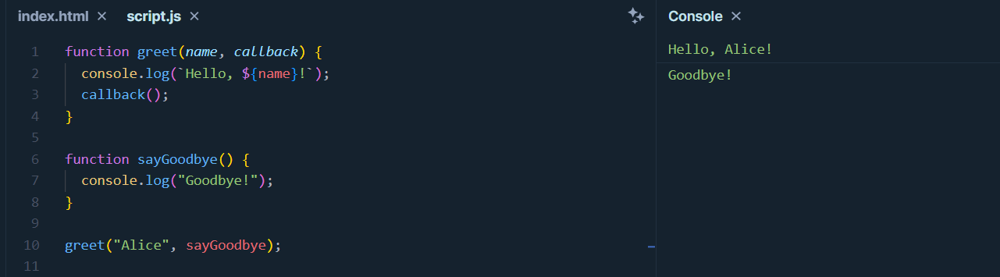
CODE EXPLANATION:
The greet function is called with the argument "Alice" and the sayGoodbye function as the callback.
Inside greet, it logs "Hello, Alice!".
After the greeting, it invokes the callback function, which is sayGoodbye.
sayGoodbye logs "Goodbye!".
Q.2a: Write a callback function to print numbers from 1 to 7, in which 1 should be printed after 1 sec, 2 should be printed after 2 sec, 3 should be printed after 3 sec, and so on.
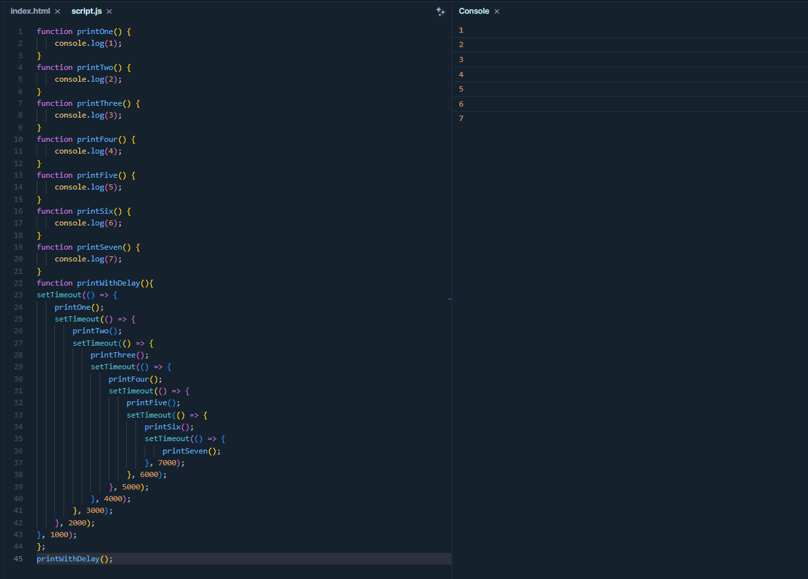Q.2b: Explain Callback hell
Callback hell, or the "Pyramid of Doom," occurs when nested
callback functions are used extensively in asynchronous JavaScript code.
Deeply indented structures make the code hard to read, maintain, and debug.
It often arises when dealing with multiple asynchronous operations dependent
on one another. To alleviate callback hell, modern JavaScript features like Promises
and async/await provide more structured, readable, and error-handling-friendly alternatives,
allowing developers to manage asynchronous code with greater ease and clarity.
Q.3: Write the promise function to print numbers from 1 to 7, in which 1 should be printed after 1 sec, 2 should be printed after 2 sec, 3 should be printed after 3 sec, and so on.
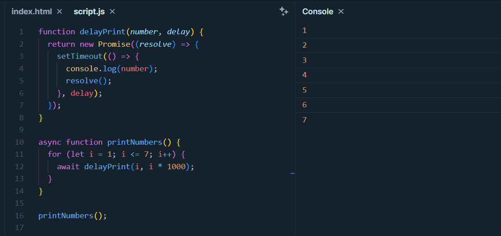
Code Explanation:
delayPrint is a function that returns a Promise.
It logs the number after the specified delay and resolves the Promise when done.
printNumbers is an async function that uses a loop to print numbers from 1 to 7 with increasing delays.
await ensures that each number is printed after the specified delay.
When you call printNumbers(), it will print numbers from 1 to 7 with the specified
delays of 1 second, 2 seconds, 3 seconds, and so on.
Q.4: Create a promise function accepting an argument, if yes is passed to the function then it should go to resolved state and print Promise Resolved, and if nothing is passed then it should go to reject the state and catch the error and print Promise Rejected
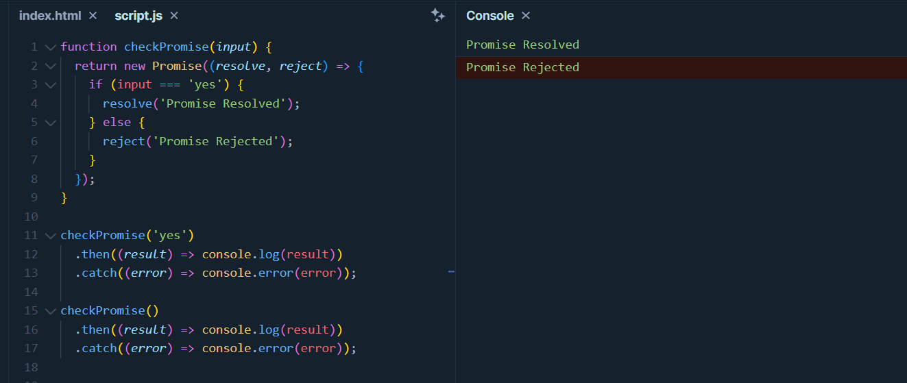
Code Explanation:
The checkPromise function accepts an input argument.
It creates a Promise that resolves with 'Promise Resolved' if the input is 'yes'
and rejects with 'Promise Rejected' for any other input.
when we pass the value Yes and nothing inside checkPromise function, that time
.then() method handles the resolved state, and .catch() method handles the rejected state.
Q.5: Create examples to explain callback function
Basic CallBack
CallBack with Data
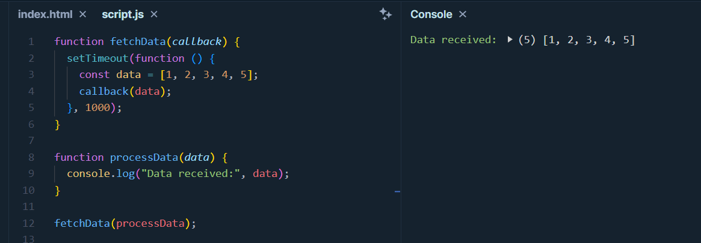CallBack for Error Handling
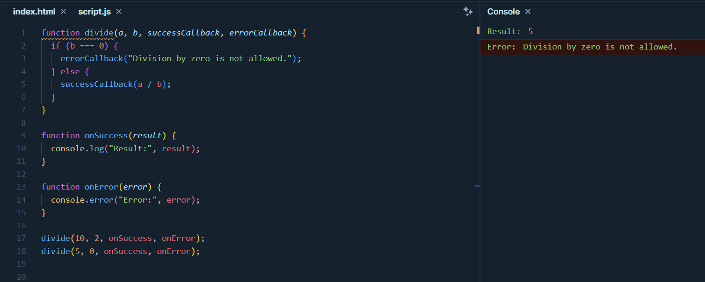Q.6: Create examples to explain callback hell function
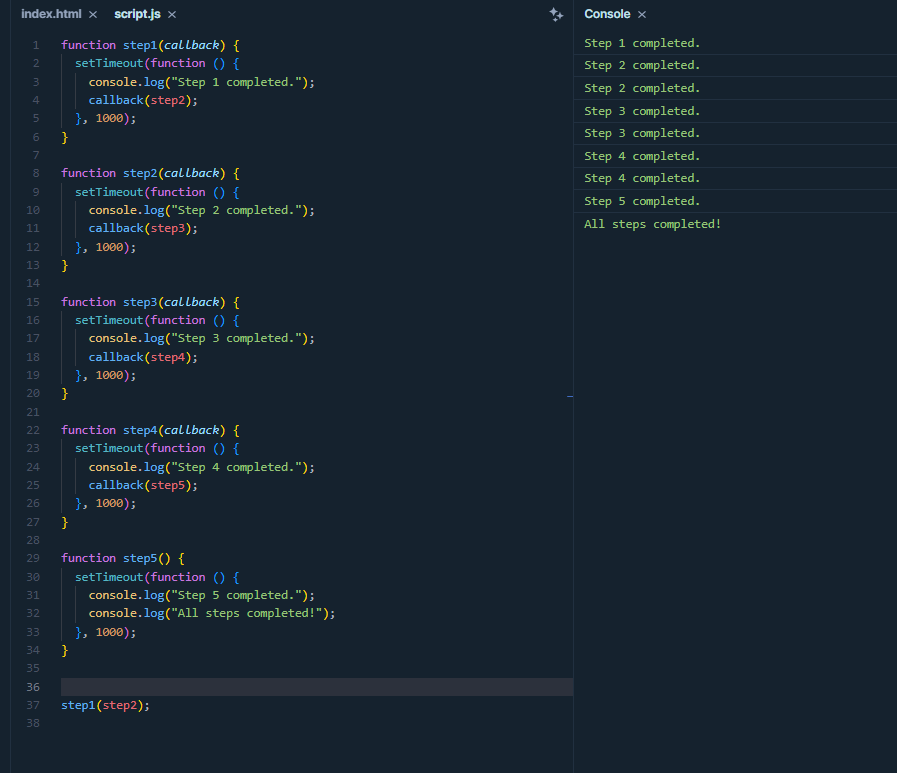Q.7: Create examples to explain promises function
Basic Promises
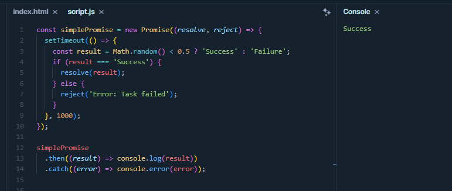Promise Chaining
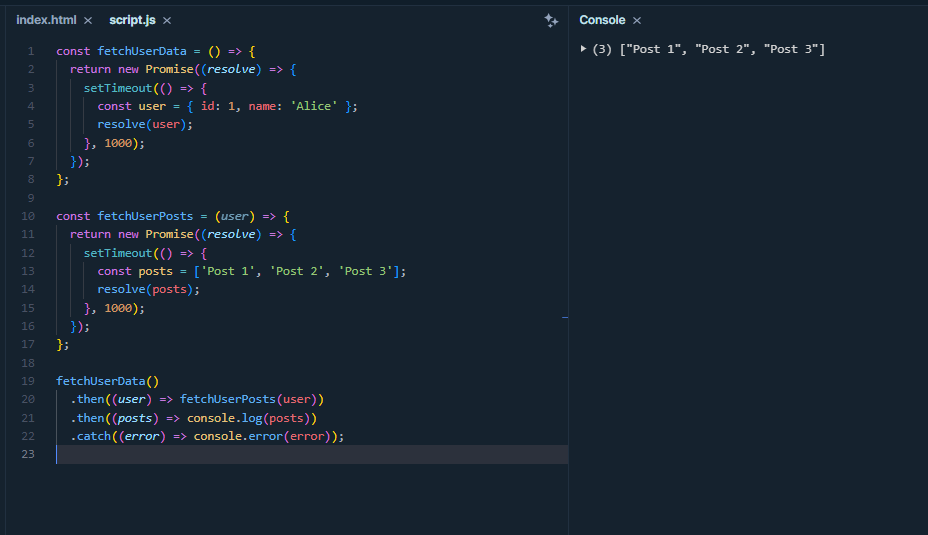Q.8: Create examples to explain async await function
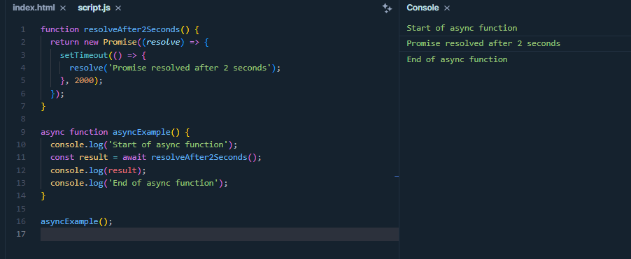Q.9: Create examples to explain promise.all function
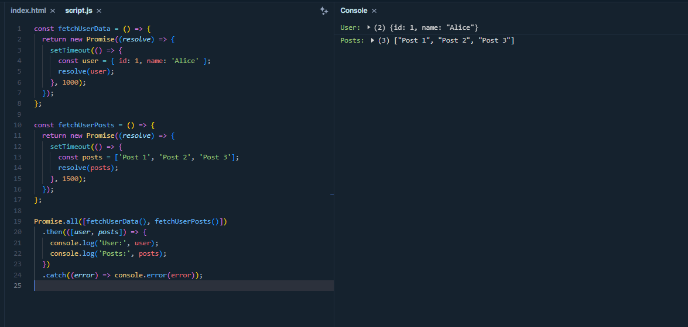